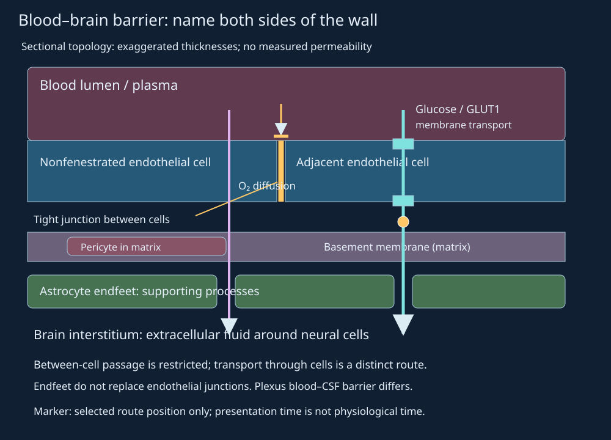
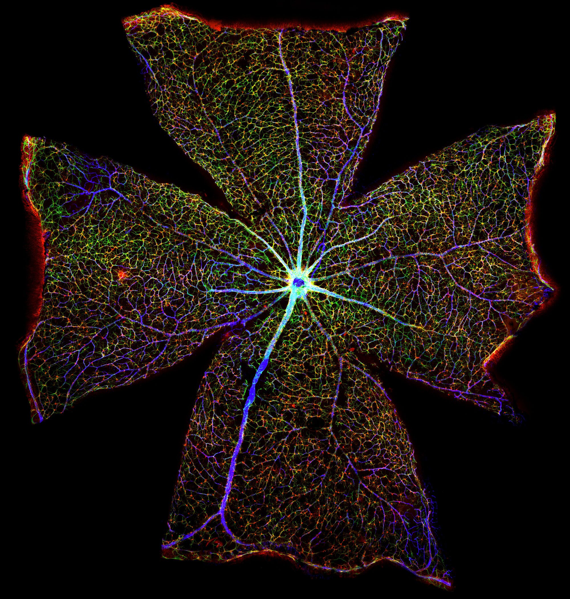
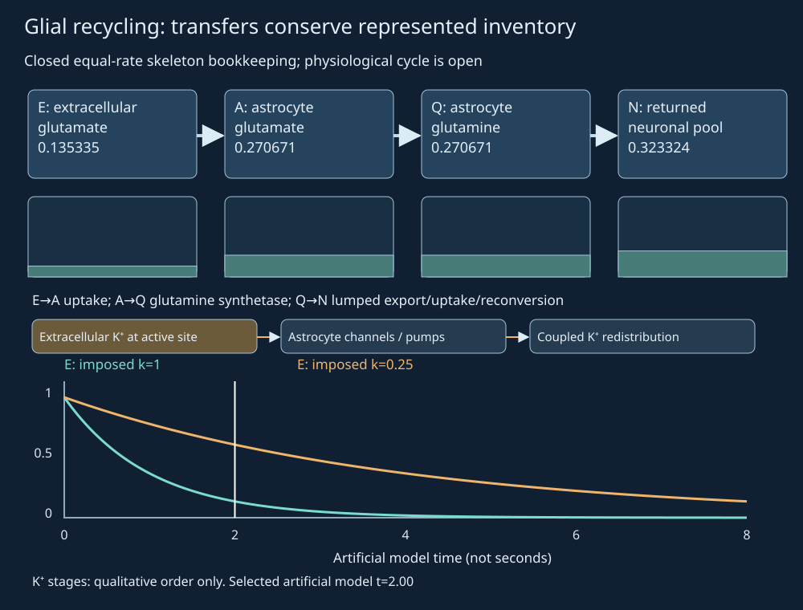
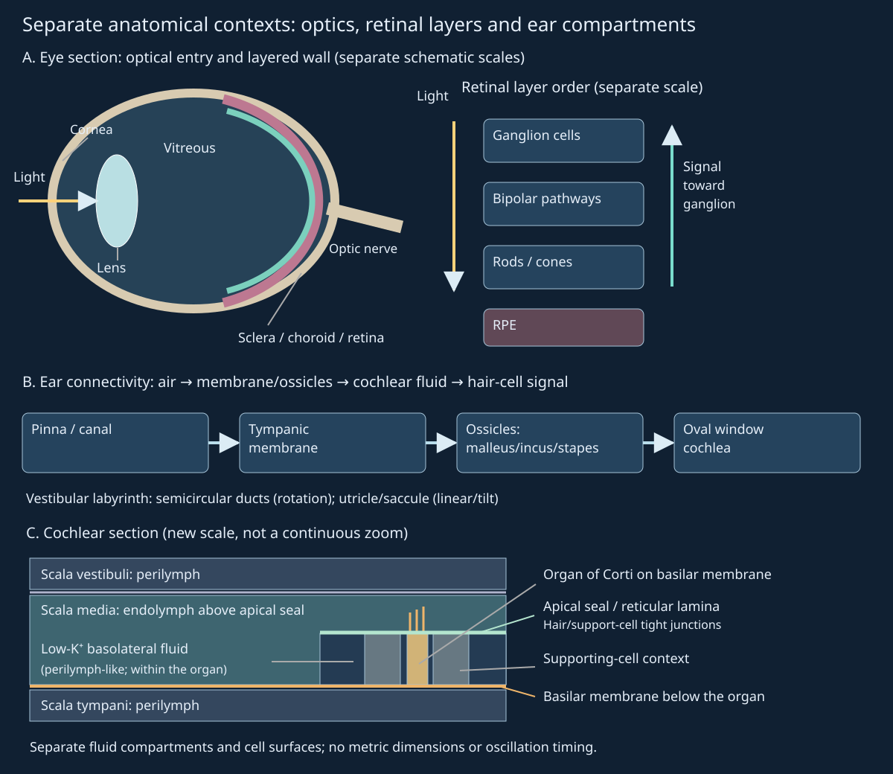
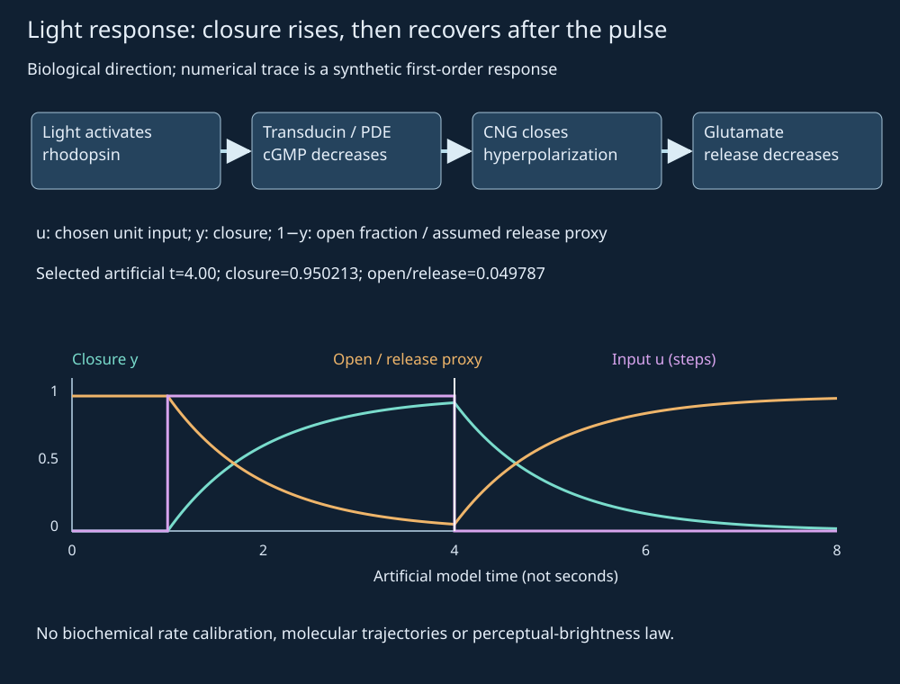
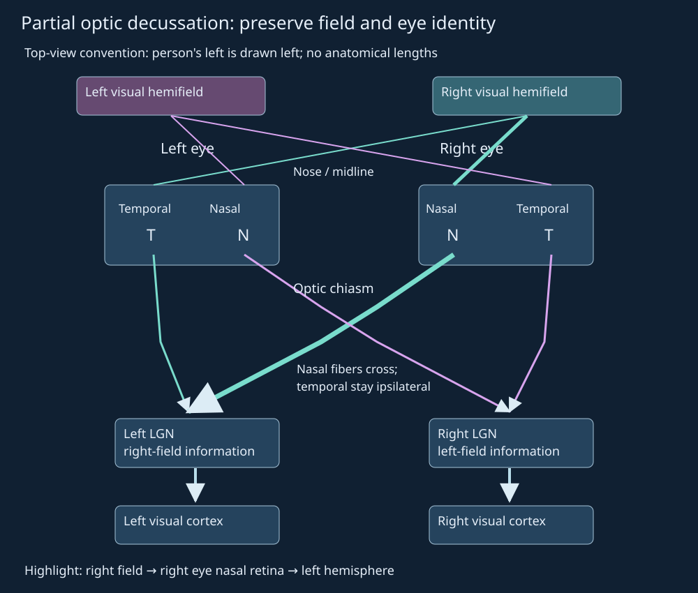
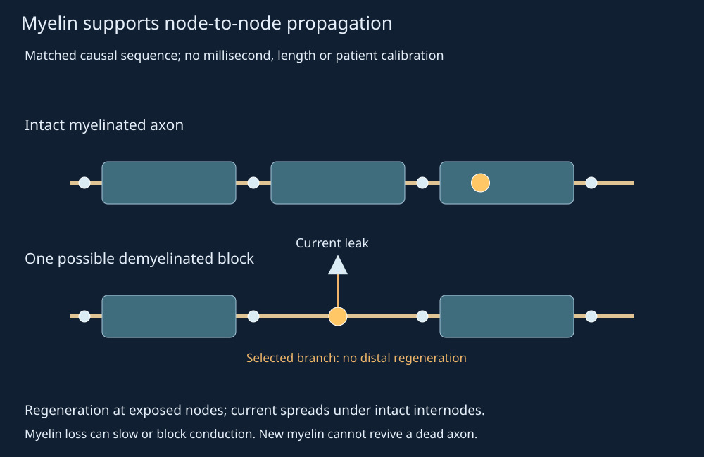

25. Glia, barriers and sensory information
A person can lose the right half of the visual world while retaining input from both eyes. A neuron can fail because its axon has lost myelin even though its sensory receptor still responds. A photoreceptor responds to light by becoming more negative, whereas bending an auditory hair bundle in its excitatory direction makes its cell more positive. These observations become coherent when we separate the stimulus, the cell that transduces it, the extracellular environment that supports signaling, and the pathway that carries the information.
We will follow a small patch of neural tissue receiving a sensory input. Blood must deliver substrates across a selective interface; glial cells help preserve extracellular conditions and maintain axons; receptor cells convert energy or chemicals into electrical changes; connected circuits interpret the resulting activity. This sequence is an accounting framework, not a claim that every process waits for the previous one to finish. Support, signaling and feedback operate together. The final sections ask which part of this framework is disturbed in each named neurological condition, and why a treatment that changes one measurable process need not restore a lost circuit.
Official lecture spine: L58–60, including all 52 assigned topics and closing activities. Source intake inspected 10 contact sheets containing 176 sampled stills and 26 selected native reopens; that is attributed, bounded visual evidence, not continuous viewing. Clinical and regulatory sources in this chapter were checked on 4 November 2026. The observed retinal microscopy and added capillary ultrastructure are labeled or prepared mouse specimens; the human pathway maps and artificial temporal models are separate reconstructions.
25.1 The neurovascular interface L58 01:06
A neuron receives, transforms and transmits signals. Glia are several distinct cell lineages with metabolic, immune, structural and signaling functions. Calling them “glue” understates their activity. The central nervous system (CNS) comprises brain and spinal cord; the peripheral nervous system (PNS) comprises the nerves and ganglia outside them. A ganglion is a collection of neuronal cell bodies in the PNS. The optic nerve is a CNS tract despite its name.
Neurons require a stable interstitial fluid, the extracellular fluid between tissue cells. Plasma in a capillary lumen is a different compartment. The blood–brain barrier (BBB) is a set of properties of typical CNS microvascular endothelial cells, the cells lining the vessel lumen. Their nonfenestrated wall has restrictive intercellular tight junctions and low vesicular transport. “Nonfenestrated” means that the cells lack the open pores characteristic of some other capillary beds; a tight junction limits passage between cells. Passage through a cell is a distinct route. These distinctions follow the Daneman–Prat BBB synthesis; they correct the caption's claim of abundant endothelial fenestrations.
The neurovascular unit includes endothelium, adjacent mural cells, glia and neurons. A pericyte lies on the tissue side of capillary endothelium within associated basement membrane. The basal lamina, or basement membrane, is extracellular matrix rather than a second living cell sheet. Astrocyte endfeet are expanded glial processes associated with the vessel surface. Their signals support barrier properties; they do not replace endothelial tight junctions with a continuous astrocytic seal. Figure 25.1 keeps these relationships visible while deliberately exaggerating layer thickness.

Selectivity does not mean complete isolation. Oxygen and carbon dioxide can cross cell membranes by diffusion. Glucose uses GLUT1, the SLC2A1 glucose transporter, including on BBB endothelium; GLUT1 is neither an insulin receptor nor the caption's GLUT4. The consequences of deficient glucose delivery are illustrated by SLC2A1-related GLUT1 deficiency. Ion transport and efflux systems further regulate exchange. A lipophilic drug may enter membranes yet still be limited by efflux, binding or metabolism. “Lipid soluble” therefore does not guarantee useful brain exposure.
The same support architecture can be regulated or injured. The source's proposed universal sequence—astrocytes detect a toxin, induce endothelial proliferation and thicken junctions—is not a general acute barrier law. It confuses cell number, junction composition and permeability. Specialized CNS interfaces also differ from ordinary BBB vessels. In particular, a fenestrated choroid-plexus capillary is not evidence that ordinary cortical BBB capillaries are fenestrated. The anatomical boundary must be named before discussing a molecule's route.


25.2 Glial control of the signaling environment L58 16:08
During an action potential, outward potassium current contributes to repolarization. This can transiently raise extracellular K⁺, particularly near active cells. Raising extracellular K⁺ makes its equilibrium potential less negative and changes neuronal excitability; ordinary firing need not reverse the entire intracellular–extracellular concentration gradient. Astrocytes participate in clearance through channels including Kir4.1, an inwardly rectifying potassium channel, and ion pumps. A gap junction connects neighboring cell cytoplasms; coupled astrocytes can redistribute ionic load spatially. Neither channel selectivity nor network redistribution is captured by a fixed “five ions per astrocyte” capacity. The Sibille and colleagues study combined hippocampal-slice recordings and a compartment model to examine this coupling; its model-specific rates and fractional uptake are not universal human constants.
The potassium equilibrium relation from Chapter 24 makes the direction clear. For positive absolute temperature \(T\), gas constant \(R\), Faraday constant \(F\), and positive inside/outside concentrations \([K]_i,[K]_o\), \(E_K=(RT/F)\ln([K]_o/[K]_i)\). Holding \([K]_i\) fixed while increasing \([K]_o\) increases \(E_K\). This says nothing by itself about spike frequency: channel availability, other ions and membrane conductances still matter. It explains why an extracellular change can disturb information processing without destroying a neuron.
Glutamate is an amino acid and a major excitatory transmitter. After release, it binds receptors; signaling does not require each receptor to consume a transmitter molecule. Transporters remove glutamate from extracellular space, including substantial uptake into astrocytes. Astrocytic glutamine synthetase converts glutamate to glutamine using an ammonia nitrogen and ATP. Glutamine can leave the astrocyte, enter a neuron and be converted back to glutamate by neuronal glutaminase. Vesicular transport then supports reuse. This glutamate–glutamine cycle couples clearance to metabolism; it is not routine dynein delivery of recovered transmitter to lysosomes. Nor do the source's hypothetical 100/70/20 molecule partitions establish measured uptake fractions.
Recycling and disposal must be distinguished. Real glutamate and glutamine pools exchange with oxidative metabolism and new synthesis, so the physiological cycle is open. A closed model can still isolate one bookkeeping question: can an extracellular pulse fall while its represented carbon skeletons remain in other pools? We count a five-carbon skeleton as one unit and deliberately omit nitrogen, ATP consumption, direct neuronal glutamate uptake and oxidative losses. The model is a teaching construction, not a reconstruction of every reaction in a synapse.
A pulse moving through four represented pools
Let \(E(t)\) be extracellular glutamate amount, \(A(t)\) astrocytic glutamate, \(Q(t)\) astrocytic glutamine, and \(N(t)\) the returned neuronal pool after lumped export, uptake and reconversion. All are nonnegative amounts in arbitrary skeleton units. Artificial model time is \(t\ge0\). Give each of the three forward stages the same imposed rate constant \(k\ge0\), in inverse model-time units. Start with a pulse \(E(0)=M\ge0\) and the other pools zero. There is no subsequent release or loss in this bounded construction:
Adding these equations cancels every internal transfer, giving \(E+A+Q+N=M\). To solve them, first \(E=Me^{-kt}\). Multiplying the equation for \(A\) by the integrating factor \(e^{kt}\) gives \(d(Ae^{kt})/dt=kM\), hence \(A=Mkte^{-kt}\). Repeating that step for \(Q\) integrates a term proportional to \(t\), giving \(Q=M(kt)^2e^{-kt}/2\). The fourth pool is the remainder \(N=M-E-A-Q\). The shape of the intermediate pools follows transit through stages, not spontaneous creation of transmitter.
For the synthetic choice \(M=1,k=1,t=2\), the computed amounts are \(E=0.135335\), \(A=Q=0.270671\) and \(N=0.323324\); their unrounded values sum to one. Reducing all three stage rates to \(k=0.25\) at the same time leaves \(E=0.606531\) and \(N=0.014388\). This demonstrates a conditional kinetic consequence of the imposed law. It does not identify an ALS genotype, prove excitotoxic injury or measure human clearance. At \(k=0\), the pulse remains in \(E\); at \(t=0\), all represented amount is initially extracellular.

Myelin is multilayered glial membrane wrapped around an axonal segment. An internode is the myelinated segment between exposed nodes of Ranvier. Myelin reduces effective membrane capacitance and current leakage; local current spreads beneath it and regenerates an action potential at the next excitable node. Saltatory conduction does not mean that charged material teleports between nodes. A myelinating Schwann cell supplies one internode on one PNS axon; one CNS oligodendrocyte can supply multiple internodes, often on several axons. Neither statement assigns an entire axon to one cell or fixes a universal number of axons per oligodendrocyte.
Remyelination restores sheaths to surviving demyelinated axons. Adult oligodendrocyte precursor cells can generate new myelinating cells; repair varies with lesion environment, age and disease. Thus “CNS glia cannot regenerate” is false, while “new myelin guarantees recovery” is also unjustified. Myelin repair differs from rebuilding an axon that has died. The Franklin–Bodini–Goldman review documents this distinction; full-text access was restricted in this author pass, so only its accessible abstract and retrieved mechanism excerpts support this bounded summary. PNS Schwann-cell repair, discussed in Chapter 23, likewise does not guarantee complete functional recovery.
Microglia are resident CNS immune cells that survey tissue, respond to injury and can engulf material by phagocytosis. They are not simply blood monocytes continually becoming brain glia. Ginhoux and colleagues' lineage study, read through its institutional author manuscript, traced embryonic primitive myeloid progenitors into adult microglia in mice. That is direct mouse lineage evidence, not experimental embryonic fate mapping in humans. Blood-derived macrophages recruited during inflammation must be distinguished from the resident population.
Microglial response states vary across time and tissue. The experimental “M1/M2” shorthand does not exhaust that diversity, and a ramified cell is not necessarily inactive. Cytokines are immune signaling proteins; lipopolysaccharide (LPS) is a bacterial component used as an inflammatory stimulus, not a cytokine that microglia synthesize. Antibody production belongs to B-lineage plasma cells, not T cells or microglia. Glial contributions to synapse formation, plasticity and pruning are context dependent. Adult glial populations can proliferate, answering L58's closing question, but division rates and reparative roles differ by cell type. Associations of altered glial function with depression, schizophrenia or bipolar disorder do not establish one glial defect as the cause of every such condition.
25.3 Ventricles, ependyma and cerebrospinal fluid L58 29:48
Ventricles are connected fluid-filled cavities within the brain. Cerebrospinal fluid (CSF) occupies them and the subarachnoid space surrounding the CNS, contributing buoyancy and chemical homeostasis. Ordinary ependymal cells line ventricular surfaces and the spinal central canal where patent; in many adult humans the canal is replaced by a residual ependymal region rather than a continuous open CSF conduit. Their motile cilia contribute to local fluid motion where an epithelial surface faces fluid. A human MRI and tissue study supports this age/species qualification. They must not be conflated with the specialized secretory epithelium of the choroid plexus, which protrudes into ventricular spaces and is a principal source of CSF.
The plexus contains fenestrated capillaries in a connective-tissue core. Blood-derived water and solutes encounter epithelial transport and junctions before entering CSF. Its blood–CSF barrier is therefore located at choroid-plexus epithelial cells, rather than at ordinary BBB endothelium. Apical means CSF-facing here; basolateral faces the underlying stroma. The adult ordinary ventricular ependymal lining is comparatively permissive to exchange with brain interstitial fluid, rather than the same restrictive tight-junction barrier. This distinction is documented in the MacAulay–Keep–Zeuthen review, whose anatomical and secretion-evidence sections were read directly.
A compartment map consequently contains two different paths: capillary blood → BBB endothelium → brain interstitial fluid, and plexus capillary blood → stromal fluid → choroid-plexus epithelium → ventricular CSF. CSF and interstitial fluid exchange, but naming both does not make them one well-mixed volume. Pressure pulsations, respiration and ciliary beating contribute to fluid motion; secretion is not merely passive plasma filtration. The relative contributions of secretory and drainage routes depend on species, state and measurement method. The chapter does not assign one unverified human percentage to all species or fit a pressure model to the lecture's drawing.
25.4 A sensory signal has several transformations L59 01:06
A stimulus is a physical or chemical change that a receptor can detect. Transduction converts it into an electrical or biochemical change in a receptor cell. Afferent signals travel toward the CNS. Subsequent synaptic processing produces perceptual and reflex responses; stimulus detection, action-potential coding and conscious perception are different events. The familiar five senses are not an exhaustive classification. Proprioception reports body position and movement, vestibular signals report head motion and orientation, and interoception concerns internal bodily conditions.
The receptor may itself be a neuron, as in olfactory receptor neurons, or it may communicate with an afferent neuron, as auditory hair cells do. A graded receptor potential varies with stimulus and cellular state; it is not automatically an all-or-none action potential. Rods and cones hyperpolarize to light, while an excitatory hair-bundle deflection depolarizes a hair cell. The sign must follow the mechanism rather than a rule that “every stimulus depolarizes.” A reflex can be organized in spinal or brainstem circuitry before the sensory event is consciously interpreted.
Our running case can now be stated precisely. If the right visual hemifield is missing, possible failures involve optical access, retinal transduction, the organization of retinal outputs or downstream processing. “The right eye is broken” does not follow. The pathway map in Figure 25.7 will test that inference. By comparison, a salty solution and an odorant are both chemical inputs but contact different receptor populations and engage different routes to the brain. A common electrical output does not make their transduction mechanisms identical.
25.5 Vision, hearing and balance L59 04:26
From an optical image to a retinal response
The transparent cornea bends incident light, and the lens adjusts focus. The collagen-rich sclera supports the globe; the vascular choroid lies between sclera and retina. The iris changes pupil aperture; the pupil is the opening, not an independently contracting muscle. Accommodation changes lens shape for viewing distance: ciliary-muscle contraction reduces tension in the zonular fibers suspending the lens, permitting its capsule to make it more rounded. This changes optical power rather than directly setting the amount of entering light. Aqueous fluid anteriorly and vitreous gel posteriorly occupy distinct spaces. The UTHealth eye/retina text supports the image inversion and accommodation relationships used in the original context map.


The retina is neural tissue at the back of the eye. Light passes through inner retinal layers to photoreceptor outer segments near the retinal pigment epithelium (RPE); signals then pass through bipolar-cell pathways toward ganglion cells. Horizontal and amacrine cells provide additional processing. The fovea supports high-acuity central vision with a high cone density. Rods are highly sensitive in dim light and do not by themselves encode color; cones support color and high-acuity daylight vision. The spoken “peripheral cones/black-and-white” phrase is inconsistent with these roles. Ganglion-cell axons, rather than rod or cone axons, form the optic nerve.
In a rod, light changes the retinal chromophore in rhodopsin, activates the G protein transducin, and stimulates phosphodiesterase activity that lowers cyclic GMP (cGMP). Reduced cGMP closes cyclic-nucleotide-gated cation channels, reducing inward current. The cell hyperpolarizes and releases less glutamate. In darkness those channels are more open and transmitter release is higher. Recovery requires inactivation of the signaling cascade and restoration of cGMP; subsequent visual-pigment regeneration involves the RPE. Cones use related machinery with different operating characteristics. The Molday–Moritz photoreceptor review supports this sequence; the demonstration below does not claim to solve that biochemical cascade.
A deliberately reduced model isolates delayed response and recovery. Let \(u(t)\) be a chosen unit light input, zero before artificial time1, one on \(1\le t<4\), then zero. Let \(y(t)\in[0,1]\) be a normalized closure response, initially zero, obeying \(\tau_r\dot y=u-y\), with positive imposed relaxation time \(\tau_r\). Here \(\tau_r=1\) artificial time unit; this is not a measured rod time constant. During the pulse, separation or an integrating factor gives \(y=1-e^{-(t-1)/\tau_r}\). After its end, \(y(t)=(1-e^{-3/\tau_r})e^{-(t-4)/\tau_r}\). We plot \(1-y\) as both a normalized open-channel fraction and an explicitly assumed linear release proxy. The real current–voltage and release relations are more complex.
At pulse end \(t=4\), the computed closure response is 0.950213; immediately turning input off does not instantly erase the state. At \(t=5\) it is 0.349564. Thus a discontinuous stimulus can produce a continuous response with a recovery tail. This calculation establishes a property of a first-order filter, not retinal adaptation, visual-pigment turnover or perceptual brightness. Figure 25.6 shows the causal phototransduction sequence beside those shared-state traces so that the direction of the response remains attached to the biology.

Visual field is not eye identity
A visual hemifield is the half of visual space to one side of fixation. In the binocular overlap, an object in the right hemifield is imaged on the left side of each retina: the temporal half of the left retina and the nasal half of the right retina. Nasal means toward the nose; temporal means toward the temple. At the optic chiasm, nasal retinal ganglion-cell axons cross, while temporal retinal axons remain on the same side. Thus the left optic tract carries right-hemifield information from both eyes. The right tract carries the opposite hemifield.
The principal conscious-vision route continues through the thalamic lateral geniculate nucleus (LGN), optic radiations and primary visual cortex in the occipital lobe. Other retinal projections support other functions. This source-checked pathway answers L59's closing question: the right visual field projects principally to left visual cortex. It does not mean that every signal from the right eye crosses, or that visual pathways are identical to motor control of the right body. Losing a whole eye and losing one binocular hemifield are different information losses.

Mechanical energy and vestibular orientation
The pinna collects sound into the external auditory canal. The tympanic membrane, or eardrum, moves the three middle-ear ossicles: malleus, incus and stapes. The stapes drives the oval window of the fluid-filled cochlea; the round window permits compensating displacement. This is an air-to-mechanical-to-fluid coupling, not sound molecules entering an auditory neuron. The NIDCD hearing explanation separates those stages. Along the cochlear basilar membrane, higher frequencies preferentially peak near the base and lower frequencies nearer the apex.
The organ of Corti sits on the basilar membrane. Its hair cells have apical stereociliary bundles exposed to potassium-rich endolymph; the basolateral cell region faces low-K⁺, perilymph-like extracellular fluid within the organ. Hair-cell/supporting-cell apical junctions form the reticular-lamina seal between those compartments; the hair-cell body is not suspended below the basilar membrane in scala tympani. Bending the bundle toward its taller stereocilia increases mechanically gated cation-channel opening. Inward current, substantially carried by K⁺, depolarizes the cell, increases voltage-gated calcium entry and transmitter release onto afferents. This direction is possible because of the electrochemical conditions, not a universal rule that potassium entry is impossible. Inner hair cells provide most afferent sensory input; outer hair cells contribute mechanical amplification. The UTHealth auditory mechanism and sectional descriptions support Figure 25.5; its simplified hair-bundle geometry is not a measured oscillation.
Vestibular hair cells use related mechanotransduction but different mechanical couplings. Semicircular ducts sense angular acceleration through fluid–cupula displacement. The cupula is gelatinous tissue coupled to hair bundles in the ampulla, an expanded duct region. Utricle and saccule use otolith organs with weighted gelatinous layers to encode linear acceleration and tilt relative to gravity. Their outputs contribute to posture, balance and stabilization of gaze through brainstem circuits. These distinctions follow the vestibular reference. A cochlear hearing deficit and a vestibular balance deficit therefore need not occur together, despite both involving the inner ear.
25.6 Smell, taste and somatic sensation L59 16:57
Airborne odorants contact mucus over olfactory epithelium in the upper nasal cavity. Olfactory receptor neurons extend sensory cilia into this environment. In the canonical mammalian pathway, an odorant activates a G-protein-coupled receptor, which signals through \(G_{\mathrm{olf}}\), adenylyl cyclase and increased cyclic AMP (cAMP). cAMP opens cyclic-nucleotide-gated cation channels, helping depolarize the neuron. Its axon carries action potentials to the olfactory bulb, where it contacts circuits whose outputs reach olfactory cortical regions. Kato and Touhara's receptor review distinguishes this pathway from nonmammalian systems. This increases a cyclic nucleotide to open channels, in contrast to the rod cascade's decrease in cGMP and channel closure.
Gustation is taste. Molecules dissolved in saliva reach receptor cells in taste buds of the tongue and other oral/pharyngeal sites. Sweet, bitter, sour, salty and umami are basic taste qualities; umami includes responses to glutamate. Different taste-cell populations are distributed across tongue regions. There is no exclusive sweet tip, sour side or bitter back, as the NIDCD taste explanation explicitly clarifies. Regional sensitivity differences do not restore the obsolete tongue map. Taste also differs from flavor, which integrates taste with smell, temperature, texture and chemical irritation. Loss of food aroma can therefore impair flavor without abolishing basic taste detection.
Sweet, bitter and umami signaling commonly uses G-protein-coupled receptors and intracellular calcium signaling. Sour involves proton sensing; salt transduction depends on ion concentration and pathway. These are not five identical receptors placed in five sectors. The taste-transduction review also describes ATP-permeable channel synapses in some taste cells, so a universal claim of calcium-triggered vesicular release from every taste-cell type would be misleading. Its full page was restricted in this pass; the retrieved abstract and figure description support only this high-level distinction. Facial (VII), glossopharyngeal (IX) and vagal (X) afferents connect taste sites to brainstem circuits, with thalamic and gustatory cortical relays in humans, as described in the chemical-senses reference.
Somatic sensation includes touch, vibration, temperature, proprioception and nociception. The epidermis is the outer epithelial layer; the underlying dermis contains connective tissue, vessels and sensory endings; subcutaneous tissue lies beneath the skin proper and contains fat, vessels and nerves. Merkel cell–neurite complexes are associated with the basal epidermis, Meissner corpuscles with superficial dermis and Pacinian corpuscles deeper in tissue. The somatosensory reference locates these endings, which encode different mechanical features and adaptation patterns. Thermosensitive and nociceptive afferents detect temperature and potentially tissue-damaging stimuli; nociception is not identical to the subjective experience of pain.
A withdrawal response does not have to wait until cortex has consciously recognized danger. Spinal processing can recruit motor output while ascending pathways carry information toward brainstem, thalamic and cortical networks. The pain-pathways reference distinguishes these distributed routes. That addresses the caption's cortex-first reflex sequence. L59's closing odor-count claim is omitted as a precise fact: a very large inferred odor-discrimination capacity is not a direct census of all distinguishable odors. Neither that extrapolation nor the stapes' small size changes the transduction mechanisms.
25.7 From a disturbed process to a disease claim L60 01:19
A neurological symptom can reflect injury to a receptor, axon, synapse, supporting cell, blood supply or larger circuit. Weakness, tremor, altered sensation, seizures, language difficulty and cognitive change are therefore categories of impaired function, not diagnoses. Different causes can converge on one symptom, and one disease can disturb several processes. Genetic variants, infection, immune injury, trauma and vascular failure also operate at different causal levels; a list of them is not a single disease mechanism.
Evidence must specify its endpoint. A biomarker is a measured indicator of a biological process; changing it does not automatically demonstrate better function or survival. A symptomatic treatment targets a manifestation, a disease-modifying treatment changes aspects of the underlying course, and a cure would require a stronger outcome than either alone. Rehabilitation can improve activity and participation despite persistent anatomical injury. These categories make sense of the final lecture's recurring “no cure” statements without rewriting them as “nothing can be treated.”
The distinction also limits modeling. Our equal-rate recycling example can show that slower imposed clearance prolongs an extracellular pulse. It cannot determine whether a person has epilepsy, ALS or another disorder; those diagnoses involve anatomy, history, objective testing and alternative explanations. A schematic loss of myelin can illustrate current leakage and conduction failure, but it cannot predict disability from a single drawn lesion. Figure 25.8 is a matched causal comparison with that restricted role.

25.8 Named disorders: locate the lesion, then qualify the evidence L60 04:20
Alzheimer disease: protein processing, networks and treatment endpoints
Dementia describes acquired cognitive impairment that interferes with independent function; Alzheimer disease is one cause. Progressive memory and other cognitive changes involve distributed circuits rather than a single missing transmitter. Amyloid-β peptides arise from enzymatic cleavage of amyloid precursor protein (APP); selected fragments can aggregate outside cells. Abnormal tau accumulation and neuronal/synaptic injury are also characteristic. A protein fragment is not an entire neuron, and a plaque is not a genetic mutation. The APP account establishes precursor cleavage; the genetics account distinguishes uncommon familial forms from the more complex risk of common late-onset disease. An APOE risk allele does not determine an individual's future diagnosis.
The source's blanket “no treatment” statement needs a date and endpoint. In the United States, lecanemab's traditional approval and donanemab's approval concern specified early symptomatic Alzheimer populations, including mild cognitive impairment or mild dementia with confirmed amyloid pathology. They do not restore all lost function or establish prevention in everyone with a risk allele. Amyloid-related imaging abnormalities (ARIA) include swelling and bleeding; FDA's 2025 lecanemab safety communication reports serious and fatal events. These owning regulatory pages were checked on 2026-11-04. The point is the distinction between a selected indication, slowing on clinical outcomes and cure; the chapter supplies no eligibility decision, monitoring schedule or dosing.
Stroke, migraine and epilepsy are different causal categories
A stroke produces acute neurological injury from a vascular event. Ischemic stroke involves interrupted blood supply; hemorrhagic stroke involves bleeding. Neurons and glia depend on oxygen and metabolic substrates, so a blocked route can disrupt ion gradients and signaling before tissue dies. Bleeding can injure tissue through several mechanisms, including pressure and secondary damage. These categories cannot be distinguished from weakness alone; acute evaluation and imaging matter because their treatments differ. WHO's stroke account identifies stroke as an emergency. Its adult lifetime-risk statistic is not the fraction of people currently having a stroke, and no prevalence number is needed to explain the mechanism.
Migraine is a recurrent neurological headache disorder that may include nausea, sensory sensitivity and, in some people, aura. A simple “vessels dilate, therefore headache” account is inadequate for its neural and vascular mechanisms. Aura and headache are not obligatory in every attack, and not every severe headache is migraine. The WHO headache account supports this distinction; this chapter does not prescribe acute or preventive therapy.
A seizure is a transient event associated with abnormal excessive or synchronous neuronal activity. Its manifestation depends on the engaged circuit: altered awareness, sensory experience or motor activity can occur without generalized shaking. Epilepsy is an enduring predisposition to seizures, diagnosed using clinical criteria rather than any isolated faint or convulsion. The ILAE definition includes routes beyond two unprovoked seizures, such as one seizure with a sufficiently high recurrence risk or an epilepsy syndrome. WHO's account describes effective treatments for many people. Glutamate signaling and glial homeostasis can influence excitability, but the recycling toy model does not establish epilepsy or a treatment target in a person.
Parkinson disease, traumatic injury and multiple sclerosis
Parkinson disease involves degeneration of dopamine-producing neurons in the substantia nigra and altered basal-ganglia circuitry, with slowness, rigidity and other motor or nonmotor features. Tremor alone is not diagnostic. Lewy bodies commonly contain aggregated α-synuclein. The SNCA reference also describes normal presynaptic roles of this protein; its presence is not inherently disease, and aggregation is not a sufficient single causal explanation for every case. Genetic contributions vary; most cases are not explained by a simple inherited single-gene rule. The genetics account and NIH clinical summary separate causes, manifestations and treatment. Medicines and selected deep-brain stimulation can improve symptoms; an electrode stimulating a circuit does not replace every lost dopaminergic neuron or cure the disease.
Traumatic brain injury can follow an impact or a body jolt that moves the brain rapidly. Mechanical deformation and subsequent cellular/metabolic disturbances differ from an ischemic vascular blockage, although secondary injuries can overlap. A concussion need not produce a visible lesion on routine structural imaging. Conversely, “mild” classification does not guarantee a trivial recovery. CDC's TBI explanation distinguishes injury severity and consequences. The lecture's proposed universal surgical solution is rejected: intervention depends on the actual lesion, and rehabilitation addresses function rather than rewinding injury.
Multiple sclerosis is an immune-mediated disease of the CNS in which myelin and axons can be injured. Loss of insulation changes current spread and may slow or block conduction, as in the restricted comparison in Figure25.8; location and degree of injury determine consequences. Disease-modifying treatments can reduce aspects of activity or progression, without constituting a universal cure, as the NIH summary explains. Microglia are resident myeloid cells, not antibody-producing B cells. A plasma cell is an antibody-secreting differentiated B cell, as defined by NCI. Confusing these lineages obscures the several immune compartments involved in disease.
ALS: a motor-system disease, not a universal DNA defect repaired by one drug
Amyotrophic lateral sclerosis (ALS) progressively injures motor neurons and their networks, producing weakness and sometimes other neurological changes. Glutamate handling, RNA/protein biology and non-neuronal cells are among investigated mechanisms; no single mechanism explains every case. Most cases lack a clear family history. Established genetic causes include variants in different genes, including SOD1, C9orf72, TARDBP and FUS; this is not evidence that all ALS is one inherited mutation. The NIH genetics account supports that heterogeneity. A genetic association, cellular mechanism and demonstrated therapy are three separate levels of evidence.
Available treatments and supportive care mean that “no cure” must not become “nothing can be done.” FDA's edaravone oral-form approval describes a study endpoint of less decline in daily functioning, not replacement of dead motor neurons. More specifically, the current tofersen label, read 2026-11-04, indicates treatment for adults with ALS who have an SOD1 mutation. Tofersen is an antisense oligonucleotide targeting SOD1 messenger RNA, not a tool that rewrites every patient's DNA. Its accelerated approval is based on reduction of plasma neurofilament light chain, a biomarker; continued approval may depend on confirmation of clinical benefit. That regulatory basis is not equivalent to proven cure or universal survival benefit. The label also reports serious neurological risks. This is a bounded United States example, not a complete worldwide drug catalogue or a personal treatment recommendation.
Huntington disease and cerebral palsy: inheritance versus early injury
Huntington disease is associated with an expanded CAG repeat in HTT and a changed huntingtin protein, not an absence of all huntingtin. Its inherited autosomal-dominant pattern means that a heterozygous affected parent can transmit the expanded allele to a child with probability one-half under the simple segregation model. It does not mean that half the parent's neurons disappear or that symptoms begin at the same age in every carrier. Repeat size and other factors affect penetrance and timing; no individual prediction is made. The NIH genetics account distinguishes movement, cognitive and psychiatric features.
Cerebral palsy describes disorders of movement and posture caused by abnormal development or injury of the developing brain. The initiating brain disturbance is nonprogressive, while manifestations and support needs can change with growth and aging. It is not equivalent to all progressive childhood neurodegeneration and not explained solely by a lack of oxygen during birth. CDC's account describes several causes and risk contexts. Therapy, assistive approaches and selected medical interventions address function; the label does not identify one uniform lesion.
The closing lecture's two claims are therefore reconciled carefully. Mature neurons usually have restricted replacement, but glial populations can proliferate in context-dependent ways; “all glia divide” is not an unlimited repair law. ALS treatments can target a particular molecule or genotype without demonstrating a common cause across all patients. Limited treatment options reflect several obstacles: diseases grouped under one label may have different causes; delivery across interfaces can be difficult; diagnosis may follow substantial neuronal loss; and rebuilding appropriately connected circuits requires more than correcting one molecule. Trials must also demonstrate a relevant benefit rather than merely a biomarker change. These are reasoned consequences of the mechanisms above, not proof that neurological treatment is impossible. The course ends with a method rather than a diagnostic shortcut: name the compartment, follow the causal route, identify what was actually measured and keep the scope of the inference attached to its evidence.
Worked problems
25.1 Two interfaces that face different fluids
Compare a glucose molecule crossing a brain microvascular wall with a solute entering ventricular CSF through choroid plexus. Identify the restrictive cellular layer in each case. Does a confocal astrocyte–vessel montage prove either permeability?
Worked solution
At the BBB, tight junctions between endothelial cells limit paracellular passage. Glucose transport uses endothelial GLUT1 across luminal and abluminal membranes; an astrocyte endfoot is not the endothelial transporter. At choroid plexus, the specialized epithelial junctional layer forms the blood–CSF barrier; the underlying capillaries are fenestrated. Ordinary ventricular ependyma is another interface. A montage resolving cell processes and vessels establishes spatial context at its preparation/resolution; without a tracer and appropriate measurements it establishes neither flux nor permeability. The two routes therefore cannot be represented by one unlabeled wall.
25.2 A closed pulse is transferred, not destroyed
In the equal-rate recycling construction, begin with one amount unit in extracellular glutamate and zero elsewhere. Use k=1 per artificial time unit. Derive the four inventories at time2, verify conservation and compare extracellular inventory with k=0.25.
Worked solution
Set x=kτ. Integrating E′=−kE gives E=e−x. The integrating-factor solution of A′+kA=kE is A=xe−x; applying it again to Q′+kQ=kA gives Q=x²e−x/2. The closed-pool balance gives N=1−E−A−Q. At x=2, E=0.1353352832, A=Q=0.2706705665 and N=0.3233235838. Their sum is1. At k=0.25, x=0.5 and E=e−0.5=0.6065306597: slower imposed transfer leaves more extracellular inventory at this observation time. This is conservation of represented carbon-skeleton amount, not proof of equal biological enzyme rates, a closed physiological brain or ALS causation.
25.3 Potassium redistribution and an equilibrium potential
For an illustrative potassium-selective membrane at fixed temperature, hold intracellular potassium at140mM. Increase extracellular potassium from4 to8mM. Using RT/F=26.7mV, calculate the change in EK. What can and cannot be concluded about excitability?
Worked solution
For a monovalent potassium ion, zero electrochemical potential difference gives EK=(RT/F)ln([K⁺]out/[K⁺]in), with voltage defined inside relative to outside. Initially EK=26.7ln(4/140)=−94.93mV; finally it is26.7ln(8/140)=−76.42mV. The change is26.7ln2=+18.51mV: the potassium equilibrium potential becomes less negative. A potassium-dominated resting membrane consequently tends to depolarize. Real voltage and spike generation also depend on other conductances, pumps and channel availability; sufficient depolarization can inactivate sodium channels. No seizure threshold follows from these two concentrations, and glial redistribution does not convert potassium into glutamine.
25.4 Signs and recovery after a chosen light pulse
In the synthetic response model let τr=1 artificial time unit, y(1)=0 and light input u=1 on1≤t<4, zero otherwise. Compute y(4), y(5) and the open-channel/release proxies. Compare the initial rod response with canonical olfactory signaling.
Worked solution
On the pulse, y′=1−y gives y(t)=1−e−(t−1); thus y(4)=1−e−3=0.9502129316. The state is continuous when input switches off at4. Thereafter y′=−y, so y(5)=(1−e−3)e−1=0.3495638023. The assumed proxies1−y are0.0497870684 and0.6504361977. Light activation of the rod cascade reduces cGMP, closes CNG channels, hyperpolarizes the cell and reduces glutamate release. Canonical olfactory cAMP signaling instead opens cation channels and depolarizes its receptor neuron. The numerical linear proxy is an imposed demonstration, not measured rod kinetics or a universal synaptic release law.
25.5 A hemifield is not an eye
A hypothetical lesion removes the left postchiasmal visual pathway. Trace the affected common visual hemifield from both eyes. Contrast this with interrupting the right optic nerve before the chiasm.
Worked solution
The right visual hemifield projects to the temporal retina of the left eye and nasal retina of the right eye. Left temporal fibers remain ipsilateral; right nasal fibers cross at the chiasm. Both therefore join the left postchiasmal pathway. Its interruption can remove corresponding right-field information from both eyes (a homonymous pattern), subject to the actual lesion extent and retinotopy. Interrupting the right optic nerve instead removes right-eye retinal output before its nasal and temporal components diverge; it does not selectively remove the right visual hemifield from both eyes. These are anatomical idealizations, not diagnoses from a reported symptom alone.
25.6 A regulatory endpoint does not establish every clinical claim
A headline says: “A drug lowers a motor-neuron injury biomarker, so all ALS DNA defects are repaired and all patients recover.” Decompose the claim using the tofersen example and propose the missing evidence.
Worked solution
First specify population: the checked United States indication is adults with SOD1-mutation ALS, not all ALS. Next specify intervention: an antisense oligonucleotide targets messenger RNA; this is not a universal DNA edit. Next specify measured endpoint: lower plasma neurofilament light chain motivated accelerated approval, which retains a requirement for verification of clinical benefit. Biomarker change alone does not establish restored strength, survival, reversal of neuronal loss or cure. Those claims require appropriately designed clinical comparisons with prespecified functional/survival endpoints, follow-up, uncertainty and safety assessment in the relevant population. An animal glial mechanism or the chapter's conserved toy pulse cannot substitute for that evidence.
Reproduce and interrogate the mechanism models
Run python code/ch25_models.py for the focused checks and worked-example outputs. The --export option writes the 161 shared states on artificial time 0–8 at increments 0.05. The Python interface restricts time to 0–100, equal stage rate to 0–100, initial represented amount to 0 or 10⁻¹⁰⁰–10⁶ and the light-response relaxation time to 0.05–10, all finite; Boolean values and values outside the stated domains are rejected. The positive amount floor avoids subnormal rounding that can erase or inflate the represented total; individual negligible pools may round to zero, while relative total conservation is checked to 10⁻¹². These are numerical domains chosen for stable teaching calculations, not physiological ranges. The JavaScript numerical cross-check API applies the same amount/time/rate domain and conservation check; the controls use the exported finite states rather than fitting data in the browser. Their20-second presentation at1× has no physiological interpretation. The light input is a precisely specified discontinuous pulse; connected response traces guide the eye between saved values.
Shared-state and structure checks independently evaluate selected analytic values, conservation, route identities and the static-export correspondence. Static export code calls the same original SVG renderer as the controls. Change an imposed stage rate in Python and regenerate before asking how the extracellular curve changes; a clinical interpretation requires evidence absent from this construction. In particular, nitrogen balance, ATP use, oxidation, continued synaptic release, spatial diffusion, saturable uptake, receptor/channel nonlinearities and disease progression are not modeled.
Sources are linked beside their claims. The capillary plate has a separate source-stream extraction, preparation and version-specific licence record. Its still morphology does not establish glucose flux or live junction kinetics. The retinal image has a separate identity, preparation and modification record and reuse notice. Source captions and sampled stills guide topic coverage; independent literature corrects biological claims. Mouse lineage experiments, prepared retinal microscopy, human pathway anatomy, synthetic kinetics and United States regulatory decisions remain distinct forms of evidence. No diagnostic, dosing or individualized treatment rule follows from their juxtaposition.